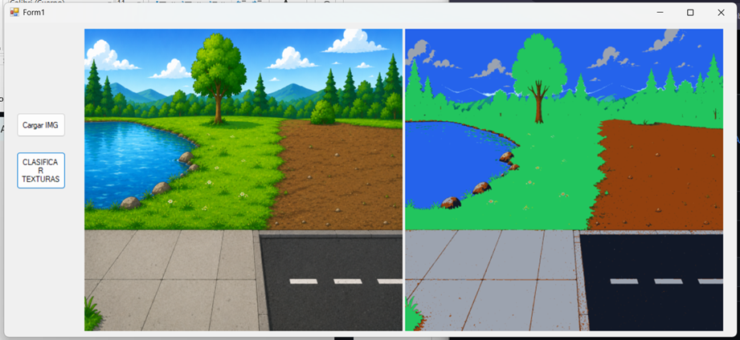
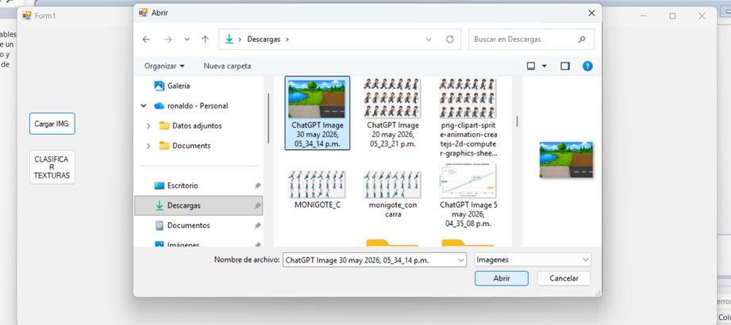
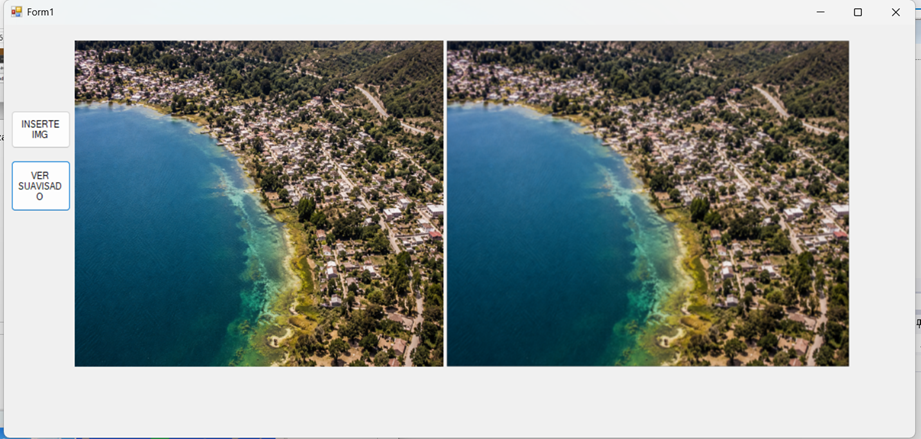

Imagen cargada
Captura del programa mostrando la imagen original seleccionada por el usuario.
Presentación web de los tres ejercicios desarrollados: clasificación de texturas, filtro de suavizado 3 x 3 y producción multimedia en Unity exportada a WebGL.
Aplicación de escritorio realizada en C# con Windows Forms para identificar superficies mediante colores RGB.
Procesamiento de imagen usando una ventana de 3 x 3 píxeles para reducir ruido y suavizar transiciones.
Escena 3D con personajes, música y animación sincronizada exportada en formato WebGL.
Este ejercicio permite cargar una imagen y clasificar visualmente superficies como césped, agua, tierra, asfalto o cemento. La aplicación fue desarrollada en Visual Studio 2012 con C# y Windows Forms.
Captura del programa mostrando la imagen original seleccionada por el usuario.

Captura del resultado obtenido después de aplicar la clasificación por colores.
Este ejercicio aplica un filtro de promedio utilizando una ventana de 3 x 3 píxeles. El objetivo es reducir el ruido visual y suavizar las transiciones de color en la imagen.

Captura del programa antes de aplicar el filtro de suavizado.

Captura del resultado después de aplicar el promedio de vecinos con matriz 3 x 3.
Este ejercicio corresponde a una escena desarrollada en Unity 3D, donde varios personajes realizan una coreografía sincronizada con música. La escena fue exportada a WebGL para ejecutarse desde un navegador web.
La página integra la evidencia visual de los ejercicios realizados en Visual Studio 2012 y permite abrir el producto multimedia desarrollado en Unity WebGL desde una pantalla independiente, manteniendo una presentación clara y ordenada.